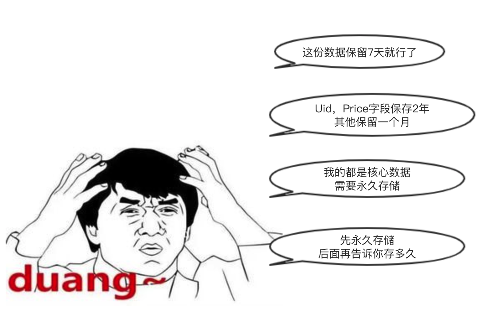
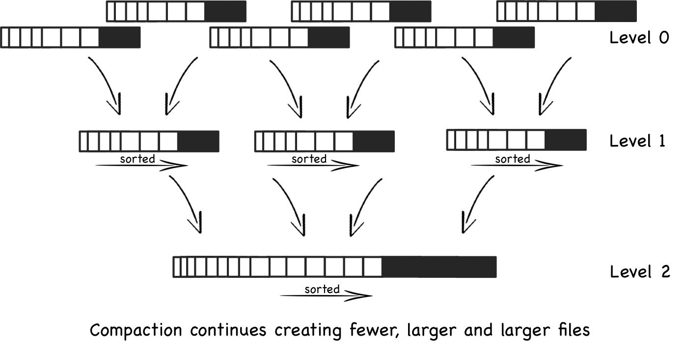
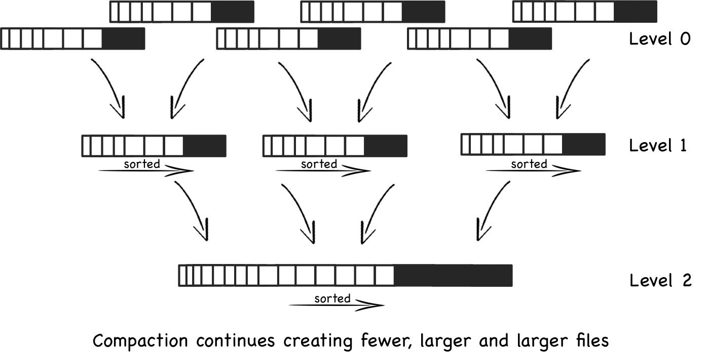

为什么需要TTL
运维痛点- 手动挡
- 业务高速发展 => 数据存储量级飞跃发展
- 成本问题, 数据治理上需要管控数据的生命周期
- 元数据 + Cron任务 + Drop Partition
- 如何控制到列字段级别？
我太难了

- 一年多的折腾
- 未完全解决痛点
- 一年多的折腾
- 未完全解决痛点
TTL功能介绍
- 支持的版本: >= 19.6.3.18
- 表级别 TTL
- 行级别过期数据
- 数据被删除
- 列级别 TTL
- 列级别过期数据
- 数据被重置为default值
- PR: https://github.com/ClickHouse/ClickHouse/pull/4212
示例
CREATE TABLE default.ttl
(
`d` DateTime,
`b` UInt32 DEFAULT 3 TTL d + interval 1 day
)
ENGINE = MergeTree PARTITION BY toYYYYMMDD(d)
ORDER BY d
TTL d + toIntervalDay(30)
SETTINGS index_granularity = 8192;
insert into ttl select today() - 5, 2 from system.numbers limit 10 ;
select sleep(3) format Null;
select count(), sum(b) from ttl;
alter table ttl modify ttl d + interval 4 day;
select count(), sum(b) from ttl;
insert into ttl select today() - 3 , 2;
select count(), sum(b) from ttl;
optimize table ttl final;
select count(), sum(b) from ttl;
原理详解
TTL 表达式
CREATE TABLE ttl_table
(
`d` DateTime,
`a` Int
)
ENGINE = MergeTree
PARTITION BY toDayOfMonth(d)
ORDER BY tuple()
TTL d + toIntervalDay(1)
解析器，转换成AST表达式
ParserKeyword s_ttl{"TTL"};
ASTPtr ttl_expression;
if (s_ttl.ignore(pos, expected))
{
if (!expression_parser.parse(pos, ttl_expression, expected))
return false;
}
TTL Info 存储
每个part存储一个 ttl.txt文件
- columns: 存储 part 级别每列的最大最小值
- table: 存储整个 table 级别最大最小值
相关代码: MergeTreeDataPartTTLInfo.h, MergeTreeDataWriter::writeTempPart
TTL Merge 流程

Partition 内部 Part 的合并
参考代码：
StorageMergeTree.h
- Merge存在多次写放大
- 后台线程轮询Merge Parts
- Merge的选择[Partition,Parts] 策略由很多参数控制
- 参考 SimpleMergeSelector.cpp

Partition 内部 Part 的合并
参考代码：
StorageMergeTree.h
- Merge存在多次写放大
- 后台线程轮询Merge Parts
- Merge的选择[Partition,Parts] 策略由很多参数控制
- 参考 SimpleMergeSelector.cpp
TTL数据删除逻辑
- 读取数据后，删除的逻辑会逐行对比最新的TTL数据 通过最新的AST eval算出最新的值）
- 参考代码 TTLBlockInputstream.cpp
- 读取数据后，删除的逻辑会逐行对比最新的TTL数据 通过最新的AST eval算出最新的值）
- 参考代码 TTLBlockInputstream.cpp
TTL Info的合并
-
Part被读取后，TTL Info也会应用最新的TTL表达式进行更新
-
多个Part的TTL Info进行交集合并
- Part被读取后，TTL Info也会应用最新的TTL表达式进行更新
- 多个Part的TTL Info进行交集合并
TTL Merge的相关思考
回顾 MergeSelector的思路
- 当Part数量增多，尽快去Merge
- 少做大的Merge
- 小批量的Part Merge，会合并的更快，即使Part之间大小不匹配
Q: 上述的 TTL 在这种场景下会存在哪些局限？
Select 的完善
- TTL Infos的真正作用 Part级别粗粒度过滤索引
- 新增 TTLMergeSelector 弥补对老数据（大块数据）的过期逻辑
TTLMergeSelector 逻辑

-
每个 merge_with_ttl_timeout 周期内有一次机会进行select
-
根据ttl_info排序， 贪心策略选择一个Partition下的Parts
- 每个 merge_with_ttl_timeout 周期内有一次机会进行select
- 根据ttl_info排序， 贪心策略选择一个Partition下的Parts
Optimize 逻辑
-
强制调用一次 force merge
-
Parts 合并成一个 大的Partition
- 强制调用一次 force merge
- Parts 合并成一个 大的Partition
TTL 原理总结
- 每个Part的TTL Info落盘存储
- 在Merge阶段在 TTLBlockInputStream 读取过程中执行过期逻辑
- TTLMergeSelector 定时选出最陈旧的一个 Partition 中需要过期的Parts
- optimize 保证所有Partition内部都能进行 Merge
TTL 使用注意事项
- TTL 仅支持 '*MergeTree' 引擎表
- TTL表达式只支持 Date or DateTime 返回类型结果
- TTL表达式只支持确定属性的计算函数（isDeterministic）
- 异步执行，不要依赖TTL来获取精准结果
- optimize table xxx final， 强制合并Partition内所有Parts
TTL 高级用法
- SYSTEM STOP/START TTL MERGES
- 参数 ttl_only_drop_parts
- 仅选择整个Part都过期的Part （ maxTTL <= currentTime)
- 默认关闭（开启可以牺牲TTL时效性，节省周期内的写放大IO）
- 参数 merge_with_ttl_timeout
- 控制 TTL 选择周期
- （默认3600 * 24，一天一次）
- (X) 示例： TTL day + toIntervalDay(4)
PARTITION BY (toYYYYMMDD(day), toHour(ifNull(rtime, now())))
- 仅选择整个Part都过期的Part （ maxTTL <= currentTime)
- 默认关闭（开启可以牺牲TTL时效性，节省周期内的写放大IO）
- 控制 TTL 选择周期
- （默认3600 * 24，一天一次）
- (X) 示例： TTL day + toIntervalDay(4)
PARTITION BY (toYYYYMMDD(day), toHour(ifNull(rtime, now())))
用起来吧！
ClickHouse TTL 是个好功能
节省了更多业余时间陪家人(女朋友)
感谢各位聆听
欢迎一切技术交流，微信：543950155
BIGO招聘： 大数据，推荐算法(C++/java/python ...)
Base： 广州，北京，新加坡